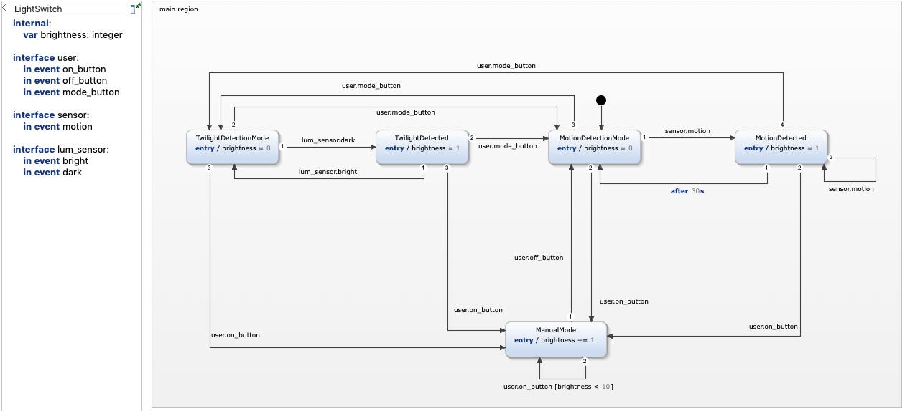
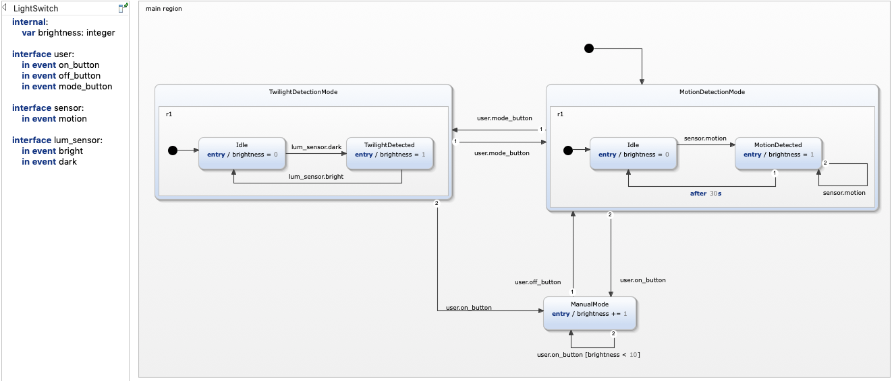
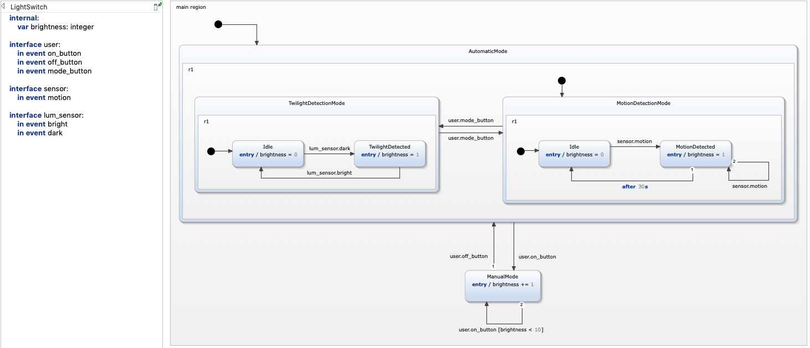
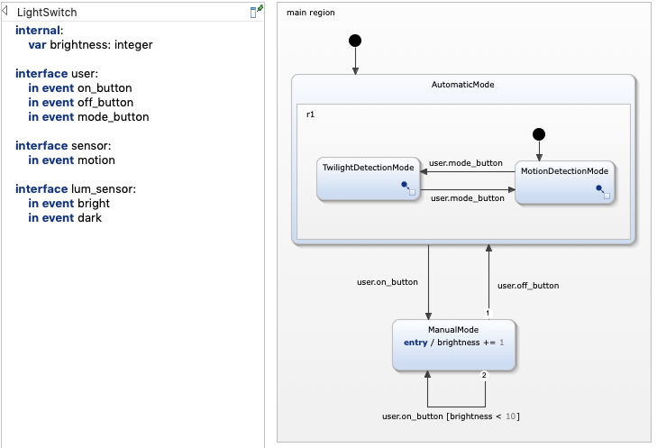

This example demonstrates the usage of hierarchies in statecharts. It explains the concepts of composite states and subdiagrams.
Let's revisit the light switch example of the Basic Tutorial. To be more concrete, let's start at the point where our light switch can be in one of three possible modes:
As each mode may be reflected in multiple states, switching between the different modes requires the modeling of many transitions. The following example shows one possible solution without using any means of hierarchies:

Although the statechart consists of only five states, it is difficult to understand the underlying behavior because of the relatively high number of transitions. Consider the states TwilightDetectionMode and TwilightDetected. Both states have an outgoing transition to MotionDetectionMode with the same trigger. Same holds for all four automatic mode states, which have an identical transition to the ManualMode state.
Having multiple states with an identical transition to the same target state is an indicator for the potential to group these states into one composite state.
A composite state is a state that contains one or more other substates. It can be used to group states into logical compounds and thus make the statechart more comprehensible. Having one outgoing transition from a composite state is semantically the same as having outgoing transitions from each of the composite's substates. In that way, a composite stay can drastically reduce the number of transitions in the statechart and hence improve readability.
Let's introduce composite states to our light switch example:

Compare the model with the one above. We introduced two composite states to logically group the states by the respective light switch modes. In that way we could reduce a number of transitions without changing the model's behavior.
There are multiple ways to create a composite state:
We can go one step further and create a further layer of hierarchy by grouping the two composite states into another composite state. In that way we can create multiple layers of hierarchy.

Using composite states is a great way to make your statechart more comprehensible. However, as your statechart becomes bigger you might want to hide the details and only focus on the higher level relationships without loosing the semantic of your statechart. Subdiagrams come as a solution here.
When the Extract Subdiagram refactoring is executed on a composite state, all containing regions are extracted into a separate diagram. The composite state no longer clutters the diagram with all its internal details, but instead appears almost like a normal state. The only difference is a small decorator icon in the lower-right corner of the state, indicating the existence of a subdiagram. When you hover over this decorator with the mouse cursor, you’ll see a small preview of the subdiagram’s content.

By introducing subdiagrams, we have hidden the details of the two light switch automatic light switch modes. In that way, you can directly understand which modes the light switch has and how to switch between them. If you are interested in the details, you can hover or click on the decorator to open the respective subdiagrams. You can revert these changes again by using the Inline Subdiagram refactoring.